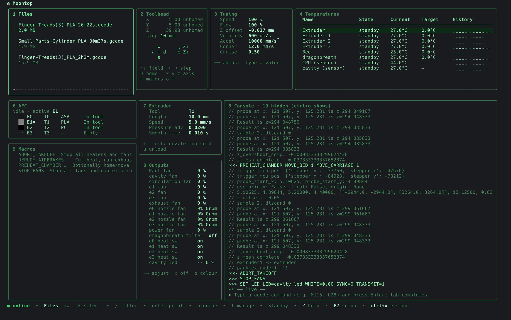

1 files
filter, print, queue. f opens the file manager: folders, details, rename, move, upload.
~ $ moontop -host voron.local:7125
A keyboard-driven terminal UI for Klipper printers, through Moonraker. Everything you reach for in Mainsail or Fluidd — over SSH, in tmux, on any machine that can see your printer.
$ curl -fsSL https://justinh-rahb.github.io/moontop/install.sh | sh$ go install github.com/justinh-rahb/moontop/cmd/moontop@latest
Nine panes, laid out by a solver you can reorder and resize. tab cycles, 1–9 jump, ctrl+x is the e-stop from anywhere.
filter, print, queue. f opens the file manager: folders, details, rename, move, upload.
wasd jogs XY, space/c jump and crouch Z. type absolute positions. home, motors off, endstops, QGL / Z tilt.
speed and flow factor, Z-offset babystep, velocity and accel limits — live, while printing.
set targets inline, presets (Mainsail's too), cooldown, braille sparkline history.
gcode with tab completion and macro parameter hints. filters hide heat-wait and TMC noise. ctrl+t swaps in the webcam.
lanes from AFC.lanes: colour, material, tool map, load / unload / eject.
tool select, extrude / retract, pressure advance, filament load / unload detected per printer.
fans, output pins and LEDs, built from each object's type.
your pinned macros, one key away, with parameter forms.
One key opens each, esc brings you back. Click any screenshot to page through them full size.
 macrosF3gall of them: filter, run, pin to the pane, fill in parameters.
macrosF3gall of them: filter, run, pin to the pane, fill in parameters.
 jobsF7Ja file manager with slicer details and upload & print, print history and totals, the job queue.
jobsF7Ja file manager with slicer details and upload & print, print history and totals, the job queue.
 bed meshF11Bvalues in coloured boxes, profiles, calibrate, screws tilt, manual probe.
bed meshF11Bvalues in coloured boxes, profiles, calibrate, screws tilt, manual probe.
 machineF8Mhost, MCUs, services, power devices, reboot and shutdown.
machineF8Mhost, MCUs, services, power devices, reboot and shutdown.
 softwareF9Uupdates with streamed output, semver-aware. announcements too.
softwareF9Uupdates with streamed output, semver-aware. announcements too.
 logsF12Ltail any log over HTTP, follow, filter, roll over.
logsF12Ltail any log over HTTP, follow, filter, roll over.
 configEopen printer.cfg in your
configEopen printer.cfg in your $EDITOR; save uploads it and offers a restart.
 help?F1every key, for the pane you're in, generated from the registry.
help?F1every key, for the pane you're in, generated from the registry.
F2 or , opens it. Your settings go in ~/.config/moontop/config.toml; per-printer ones (names, hidden sensors, presets) live in Moonraker's database, so they follow the printer.

$ moontop # full-screen dashboard
$ moontop console # inline gcode console in this terminal, with history
$ moontop gcode G28 "M117 hi" # one-shot gcode with exit codes, for scripts
$ echo BED_MESH_CALIBRATE | moontop gcode -echo
$ moontop print benchy.gcode # upload it and start printing
$ moontop upload -dir parts *.gcode
$ moontop dump -prefix AFC # printer objects as JSON
$ moontop versionWith no -host or $MOONRAKER_HOST, Moontop opens a connection manager with your recent printers. Moonraker logins and API keys work; nothing is installed on the printer.
| Linux · macOS · FreeBSD | curl -fsSL https://justinh-rahb.github.io/moontop/install.sh | sh checks the checksum |
|---|---|
| Go 1.26+ | go install github.com/justinh-rahb/moontop/cmd/moontop@latest |
| Windows | the .zip from releases ↗; put moontop.exe on your PATH |
amd64 and arm64 everywhere, armv7 on Linux — so it runs on the Pi next to the printer, too. macOS builds aren't notarized yet, but the install script's download runs as is.
$ open source, MIT. bugs, printer quirks and ideas welcome.